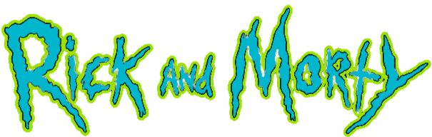

"Rick and Morty" é uma série animada americana de comédia e ficção científica que segue as aventuras de Rick Sanchez, um cientista genial e alcoólatra, e seu neto Morty Smith, um adolescente comum que muitas vezes é arrastado para as loucas aventuras interdimensionais de Rick. Embora a série seja conhecida por seu humor irreverente e estilo de animação distinto, também lida com temas profundos, como a mortalidade, o existencialismo e a natureza da família e da identidade.